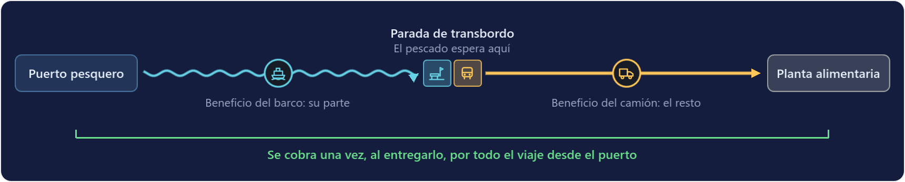

Paradas y órdenes
Adónde va un vehículo y qué hace allí.
Un vehículo visita sus paradas por orden y después vuelve a empezar por la primera.
- En cada parada descarga solo lo que esa estación acepta. Es entonces cuando cobras. Después carga lo que haya esperando.
- La carga que no se acepta se queda a bordo, salvo que la parada sea un transbordo (abajo).
- Los trenes dan la vuelta al final de la línea, así que basta una línea sencilla de extremo a extremo.
- Añade, quita y reordena paradas en cualquier momento en la ventana del vehículo.
Elegir en el mapa
- Pulsa Elegir en el mapa en la ventana de compra o en la de un vehículo. La ventana se aparta.
- Haz clic en tus estaciones, una tras otra. Cada clic añade una parada, y la barra de arriba las va enumerando.
- Deshacer quita la última parada.
- La selección sigue activa hasta que pulsas Hecho o Esc.
- Si una estación no te sirve, la nota junto al ratón dice por qué.
Carga completa
Cada parada tiene una casilla Carga completa en la ventana del vehículo: el vehículo espera allí hasta llenarse. Úsala donde sale la carga, nunca donde se entrega.
Transbordos
La carga puede cambiar de vehículo por el camino. Por ejemplo, pescado de un puerto pesquero que cruza el mar en barco y sigue tierra adentro en camión hasta una planta alimentaria:


- Construye un muelle en la otra orilla y una parada justo al lado, para que se unan en una sola estación.
- Dale al barco el muelle del puerto y esa estación, y marca Transbordo en la segunda parada (en la ventana de compra o en la del barco).
- Compra camiones que vayan de esa estación a la planta alimentaria.
- En una parada de transbordo, el vehículo deja la carga que la parada no acepta. Espera allí a tus otros vehículos, que la cargan antes que cualquier otra carga de ese tipo.
- Tus vehículos también pueden recoger la carga de transbordo de otra de tus estaciones a 3 casillas o menos, medidas entre las casillas más cercanas de ambas estaciones. Busca Estaciones cercanas para transbordo en la ventana de la estación. Deja Transbordo desactivado en la parada de recogida.
- Se cobra una sola vez, al entregarla, por todo el viaje desde donde se cargó primero.
- El beneficio del primer vehículo muestra su parte de esa tarifa y el del último el resto, para que veas cuánto gana cada tramo.
- Un vehículo nunca recoge la carga que ha dejado en su propia parada de transbordo.
Solo descargar, no cargar, pasar por el depósito
El pequeño menú junto a la casilla Transbordo de una parada tiene tres órdenes más. El botón muestra un icono por cada una que esté activa.
- Solo descargar: se descarga todo. Lo que la estación acepta se entrega y se cobra; el resto se deja allí como transbordo. No se carga nada.
- No cargar: entrega lo que la estación acepta, pero no carga nada, así que el vehículo guarda el espacio para una parada posterior.
- Pasar por el depósito: después de la parada, el vehículo pasa por tu depósito más cercano, esté donde esté, para una revisión y cualquier cambio de carga pendiente. Los barcos y aviones se atienden en sus estaciones.
- Una parada no puede ser Solo descargar y Carga completa a la vez, y No cargar se desactiva mientras cualquiera de las dos esté marcada. En una línea, estas órdenes valen para todos sus vehículos.
Vehículos perdidos
Cuando un vehículo se pierde, un mensaje lo avisa: haz clic en él para abrir el vehículo. Cuando se pierden varios a la vez, el mensaje abre Problemas.
Un vehículo que dice Perdido no encuentra el camino a su siguiente parada. Sigue intentándolo; arregla la carretera o la vía y continuará.
Una parada cuya estación se ha derribado aparece marcada como Derribado en la ventana del vehículo. Añade otra parada y se quitará de la ruta.
Cambiar la carga
- Pulsa Cambiar carga junto a la barra de carga en la ventana del vehículo, elige qué debe llevar y confirma.
- El vehículo entrega lo que lleva en la próxima parada, no carga nada y va a un depósito, donde se hace el cambio. Los barcos y los aviones se cambian en esa misma parada.
- Hasta que esté hecho puedes cancelar el cambio y recuperar el dinero.
- El vehículo conserva sus órdenes, su edad y su historial.
- Un tren también puede ganar, perder o mezclar vagones. Convertir un vagón cuesta 975 $ y uno nuevo 6.500 $; uno retirado devuelve lo que todavía vale.
- Cualquier otro vehículo paga el 15% de su precio por el cambio.
- La carga a bordo que ya no cabe se pierde.
En la ventana del vehículo
| Botón | Qué hace |
|---|---|
| Seguir | La cámara sigue al vehículo. |
| Parar | Lo detiene en la siguiente estación; pulsa otra vez para ponerlo en marcha. |
| Solo trenes: le da la vuelta donde está y lo manda a una de sus paradas a la que llegue por ese lado, o si no a un depósito. | |
| Clonar | Compra otro igual con las mismas órdenes. |
| Renovar | Lo cambia por uno nuevo del mismo modelo. |
| Vender | Haz clic dos veces. Recuperas su valor actual. |